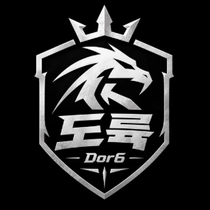

FC ONLINE CLUB
도륙DOR6
시즌 정보를 불러오는 중…
📊 이번 시즌 요약
불러오는 중…
🔗 바로가기
📝 패치노트 · 업데이트 이력 보기
© 2026 도륙(Dor6). All rights reserved.
이 사이트의 디자인·화면 구성·기능 기획·소스 코드·분석 로직(플레이스타일·에이스 칭호 판정 등)과 문구는 도륙(Dor6)의 저작물입니다. 사전 허락 없이 복제·수정·배포하거나 유사 사이트 제작에 사용하는 것을 금지합니다.
FC 온라인 및 선수 이미지·게임 데이터의 권리는 NEXON Korea와 각 권리자에게 있으며, 이 사이트는 넥슨 오픈 API를 이용한 비공식 클럽 사이트입니다. Data based on NEXON Open API. 홈의 'FC온라인 소식'은 FC온라인 공식 홈페이지 공지사항·개발자 노트를 출처와 함께 옮긴 것으로, 저작권은 NEXON Korea에 있습니다.